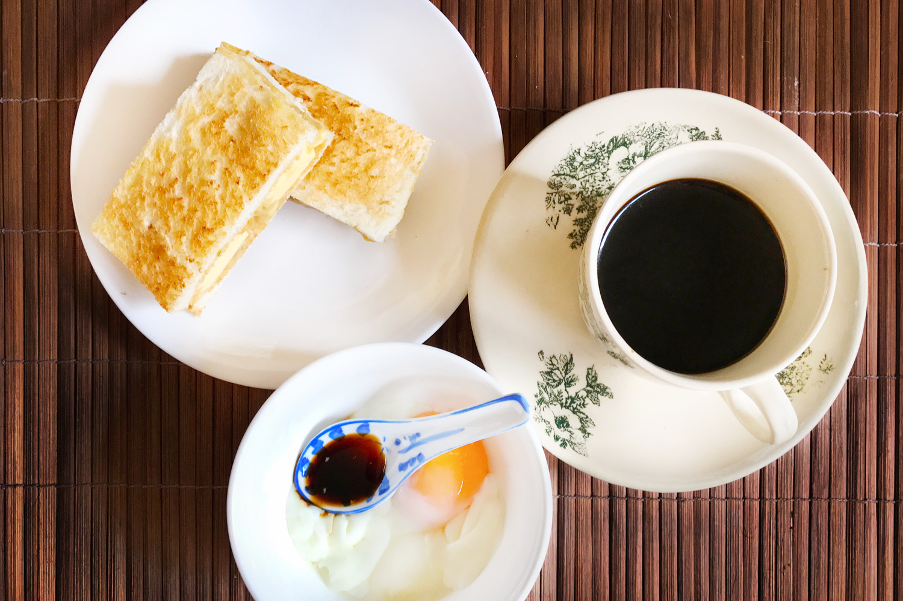

Making Kaya Toast

Ingredients
- White soft bread
- Salted butter
- Kaya jam
- Eggs
- Soy sauce
- White pepper
Recipe
Preparing the eggs
- Leave the eggs outside the fridge for 5 minutes as cold eggs may crack
- Bring 4 cups of water to a boil and gently lower the eggs
- Set a timer for 7 minutes
- Use a spoon to lift the eggs and submerge in cold water
- Crack the egg and serve with ground white pepper and little bit of soy sauce.
Preparing the bread
- Cut the crust off 2 slices of bread
- Toast the bread until golden brown. Slightly over toast rather than under toast.
- Spread the Kaya jam generously on both sides of the toast
- Cut thin slices of cold butter and arrange it to cover one side of the jam.